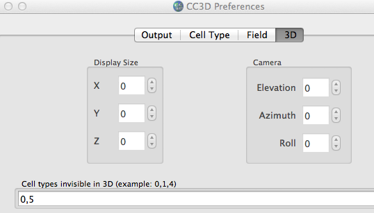
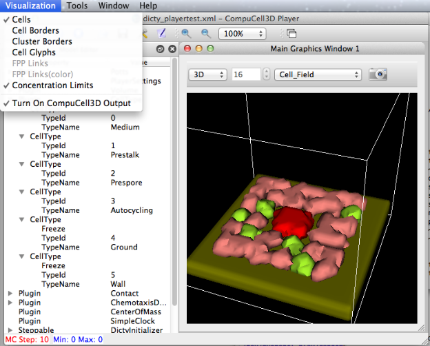
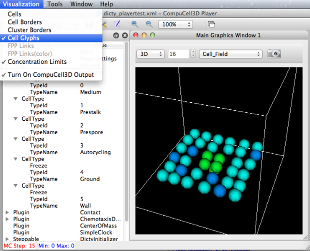

We hide the cell type for the wall (=5), otherwise we see a wall :)


We still need to map the specified cell type colors to cell glyphs.
When we display a 2D slice, the Cell Glyphs vis option is ignored (fix sometime).
The sim is taken from one provided by Michael Rountree, experimenting with the PlayerSettings.
ty ~/dev/Glazier/dicty_playertest.xml
<CompuCell3D>
<Potts>
<Dimensions x="40" y="40" z="40"/>
<Anneal>0</Anneal>
<Steps>30000</Steps>
<Temperature>2</Temperature>
<Offset>-0.1</Offset>
<Flip2DimRatio>1.0</Flip2DimRatio>
</Potts>
<Plugin Name="PlayerSettings">
<Project2D YZProj="7"/>
<InitialProjection Projection="YZ"/>
<Rotate3D XRot="27" YRot="-11"/>
</Plugin>
<Plugin Name="Volume">
<TargetVolume>68</TargetVolume>
<LambdaVolume>1.5</LambdaVolume>
</Plugin>
<Plugin Name="CellType">
<CellType TypeName="Medium" TypeId="0"/>
<CellType TypeName="Prestalk" TypeId="1"/>
<CellType TypeName="Prespore" TypeId="2"/>
<CellType TypeName="Autocycling" TypeId="3"/>
<CellType TypeName="Ground" TypeId="4" Freeze=""/>
<CellType TypeName="Wall" TypeId="5" Freeze="" />
</Plugin>
<Plugin Name="Contact">
<Energy Type1="Autocycling" Type2="Autocycling"> 0.5 </Energy>
<Energy Type1="Prestalk" Type2="Prestalk"> 1.5 </Energy>
<Energy Type1="Prespore" Type2="Prespore"> 2 </Energy>
<Energy Type1="Autocycling" Type2="Medium"> 2 </Energy>
<Energy Type1="Prestalk" Type2="Medium"> 2 </Energy>
<Energy Type1="Prespore" Type2="Medium"> 2 </Energy>
<Energy Type1="Prestalk" Type2="Prespore"> 2 </Energy>
<Energy Type1="Prestalk" Type2="Autocycling"> 2 </Energy>
<Energy Type1="Prespore" Type2="Autocycling"> 2 </Energy>
<Energy Type1="Medium" Type2="Medium"> 0 </Energy>
<Energy Type1="Ground" Type2="Ground">0</Energy>
<Energy Type1="Ground" Type2="Medium">0</Energy>
<Energy Type1="Ground" Type2="Autocycling">2</Energy>
<Energy Type1="Ground" Type2="Prestalk">2</Energy>
<Energy Type1="Ground" Type2="Prespore">2</Energy>
<Energy Type1="Wall" Type2="Wall">0</Energy>
<Energy Type1="Wall" Type2="Medium">0</Energy>
<Energy Type1="Wall" Type2="Autocycling">20</Energy>
<Energy Type1="Wall" Type2="Prestalk">20</Energy>
<Energy Type1="Wall" Type2="Prespore">20</Energy>
<Energy Type1="Wall" Type2="Ground">20</Energy>
<Depth>1.5</Depth>
</Plugin>
<Plugin Name="ChemotaxisDicty">
<Lambda>200</Lambda>
<ChemicalField Source="ReactionDiffusionSolverFE_SavHog">cAMP</ChemicalField>
</Plugin>
<Plugin Name="CenterOfMass"/>
<Plugin Name="SimpleClock"/>
<Steppable Type="DictyInitializer">
<Gap>1</Gap>
<Width>4</Width>
<ZonePoint x="14" y="14" z="3" >10</ZonePoint>
<PresporeRatio>0.8</PresporeRatio>
</Steppable>
<Steppable Type="ReactionDiffusionSolverFE_SavHog">
<NumberOfFields>3</NumberOfFields>
<FieldName>cAMP</FieldName>
<FieldName>Refractoriness</FieldName>
<DeltaX>0.37</DeltaX>
<DeltaT>0.01</DeltaT>
<DiffusionConstant>1.0</DiffusionConstant>
<DecayConstant>0.0</DecayConstant>
<MaxDiffusionZ>8</MaxDiffusionZ>
<IntervalParameters c1="0.0065" c2="0.841"/>
<fFunctionParameters C1="20" C2="3" C3="15" a="0.15"/>
<epsFunctionParameters eps1="0.5" eps2="0.0589" eps3="0.5"/>
<RefractorinessParameters k="3.5" b="0.35"/>
<MinDiffusionBoxCorner x="0" y="0" z="0"/>
<MaxDiffusionBoxCorner x="40" y="40" z="40"/>
</Steppable>
<Steppable Type="DictyChemotaxisSteppable">
<ClockReloadValue>850</ClockReloadValue>
<ChemotactUntil>750</ChemotactUntil>
<IgnoreFirstSteps>500</IgnoreFirstSteps>
<ChetmotaxisActivationThreshold>0.2</ChetmotaxisActivationThreshold>
<ChemicalField Source="ReactionDiffusionSolverFE_SavHog">cAMP</ChemicalField>
</Steppable>
</CompuCell3D>